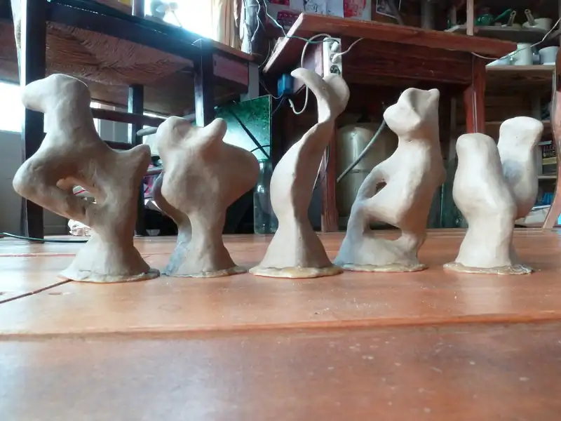
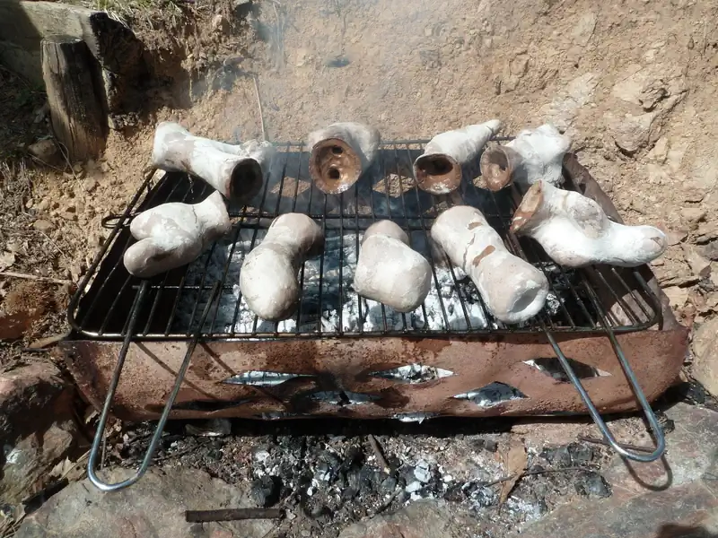
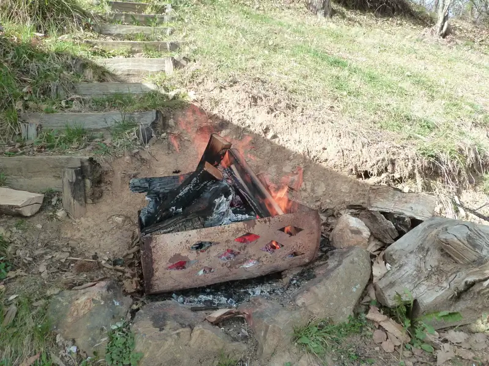
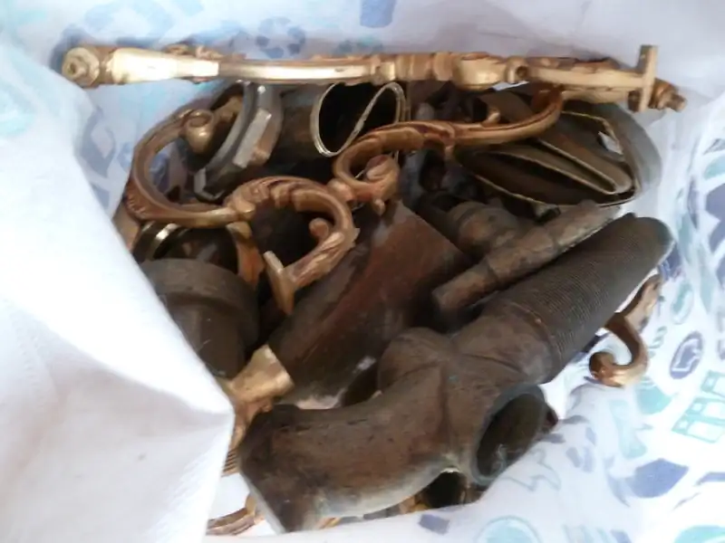
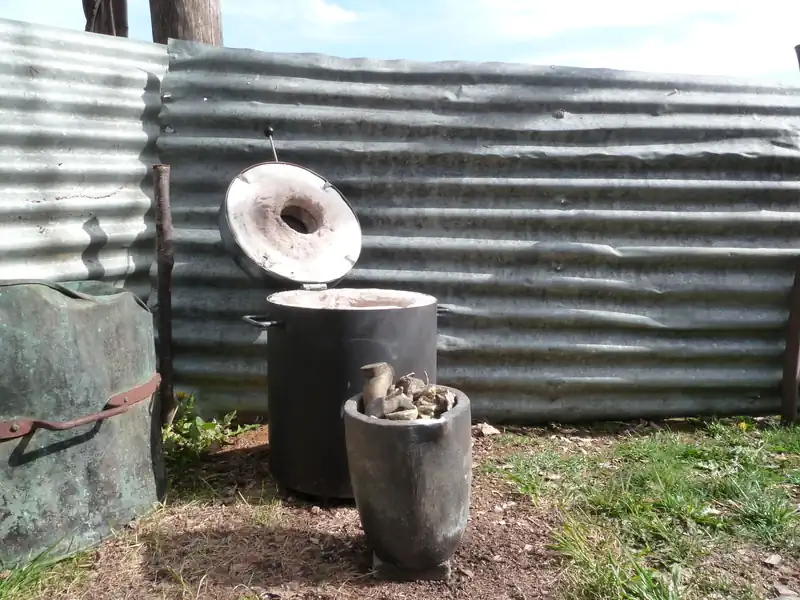
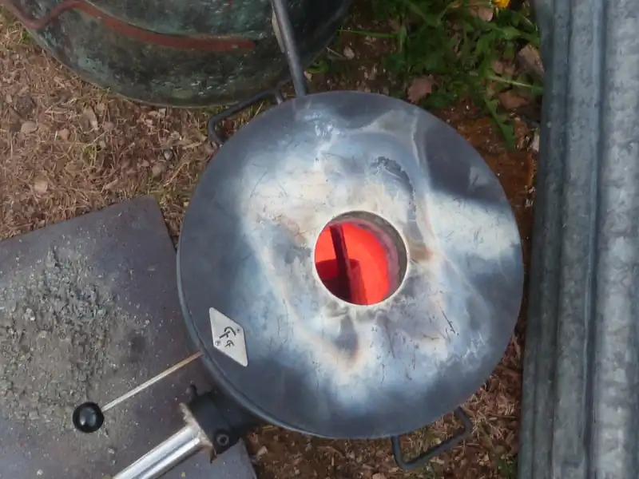
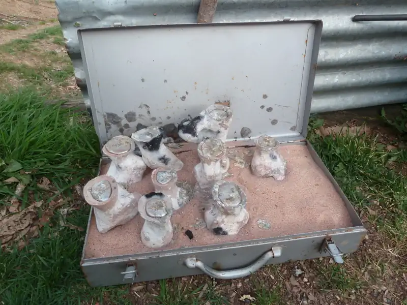
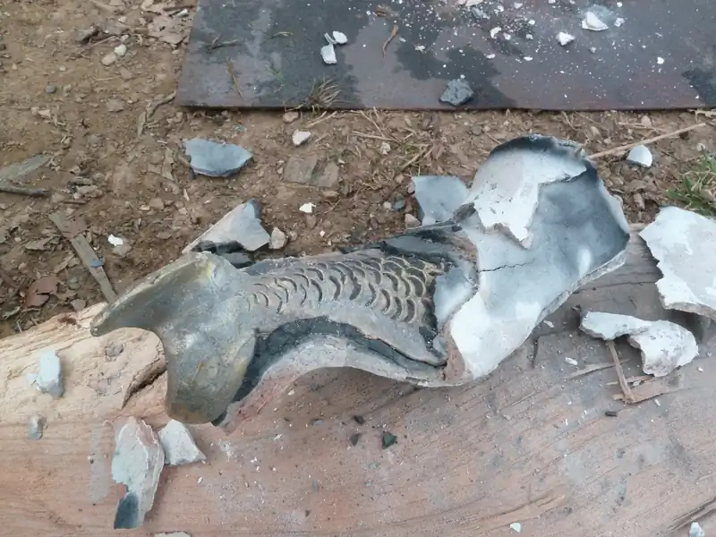
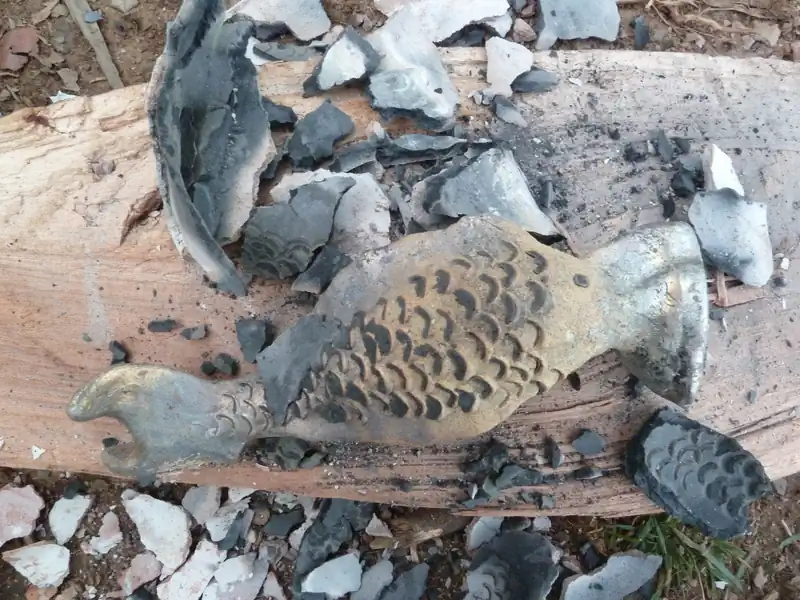

Les sculptures en cire d'abeille avec leurs tiges de coulée et l'entonnoir

Le moulage en argile avec la cire dedans

Le décirage, la cire fond et le moule se vide

La cuisson des moules

Le métal à fondre

Le four, le creuset et le métal dedans

Le métal en fusion dans le four

Le métal coulé dans les moules

On casse le moule

La sculpture se dévoile. Il faut ensuite la nettoyer, la polir, effectuer divers traitements avant d'obtenir la sculpture finie.
C'est un processus long et plein de surprises !